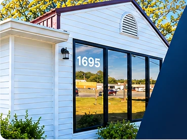

About Rennie IT
Professional expertise. A local connection.
More than 20 years of experience across IT infrastructure, cybersecurity, auditing, and risk management—available right here in Boaz.
Professional Expertise You Can Trust
Rennie IT combines practical technology support with advanced professional certifications in cybersecurity, IT risk, and auditing.
CISSPCybersecurity Leadership
CRISCIT Risk Management
CISAIT Auditing & Assurance
Local people. Personal service.
Visit our location at 1695 US Highway 431, Boaz, AL 35957. We support individuals and small businesses with practical, security-focused technology services.
Contact Rennie IT
Serving Northeast Alabama
Visit Rennie IT at 1695 US Highway 431 in Boaz, Alabama. We work with businesses and individuals in Boaz, Albertville, Guntersville, Arab, Gadsden, Rainbow City, and surrounding Northeast Alabama communities.
Let’s get your technology working for you.
Local help, professional expertise, and straightforward answers.